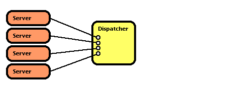
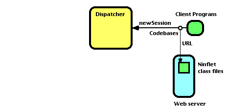
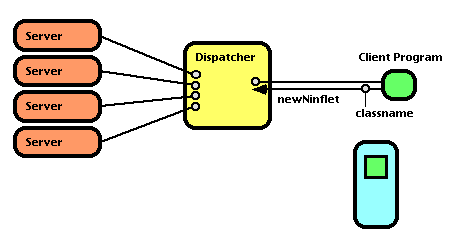
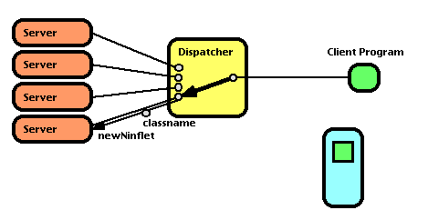
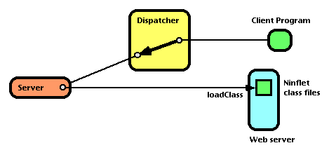
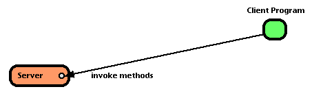

<HTML>
<HEAD>
<TITLE>
Ninflet: Java $@$K$h$k(J World-Wide High Performance Computing $@4D6-(J</TITLE>
</HEAD>

<BODY>
<H1 ALIGN=CENTER>
Ninflet: Java $@$K$h$k(J World-Wide <BR>
High Performance Computing $@4D6-(J</H1>

<DL>
<DT>$@9bLZ(J $@9@8w(J
(<A HREF="mailto:takagi@center.nitech.ac.jp">takagi@center.nitech.ac.jp</A>)
$@L>8E209)6HBg3X(J
<DT>$@>>2,(J $@Ao(J
(<A HREF="mailto:matsu@is.titech.ac.jp">matsu@is.titech.ac.jp</A>)
$@El5~9)6HBg3X(J
<DT>$@CfED(J $@=(4p(J
(<A HREF="mailto:nakada@etl.go.jp">nakada@etl.go.jp</A>)
$@EE;R5;=QAm9g8&5f=j(J
<DT>$@4X8}(J $@CR;L(J
(<A HREF="mailto:sekiguchi@etl.go.jp">sekiguchi@etl.go.jp</A>)
$@EE;R5;=QAm9g8&5f=j(J
<DT>$@:4F#(J $@;05W(J
(<A HREF="mailto:msato@rwcp.or.jp">msato@rwcp.or.jp</A>)
$@?7>pJs=hM}3+H/5!9=(J
<DT>$@D9Eh(J $@1@J<(J
(<A HREF="mailto:umpei@is.ocha.ac.jp">umpei@is.ocha.ac.jp</A>)
$@$*Cc$N?e=w;RBg3X(J
</DL>

<H2 ALIGN=CENTER>$@35MW(J</H2>
<P>
<BLOCKQUOTE>
$@%$%s%?!<%M%C%H>e$NM75Y7W;;5!$N7W;;%Q%o!<$r@$3&5,LO$G6&M-!"(J
$@6&F1MxMQ$9$k$?$a$N4D6-$H$7$F!"(J
Java $@$N(J secure $@$G(J architechture neutral $@$JFCD9$r3h$+$7$?!"(J
$@!V(JNinflet $@%7%9%F%`!W$rDs0F$9$k!#(J
$@K\O@J8$G$O!"(JNinflet $@%7%9%F%`$N4pK\%"!<%-%F%/%A%c!"JBNsJ,;6=hM}$X$N1~MQ!"(J
$@1?MQ7ABV$K4X$9$k9M;!!"4XO"8&5f$K$D$$$F=R$Y$k!#(J
</BLOCKQUOTE>
</P>

<HR>

<H2><A NAME="Contents">$@L\<!(J</A></H2>

<UL>
<LI> <A HREF="#backgorund">1. $@$O$8$a$K(J</A>
<LI> <A HREF="#architecture">2. Ninflet $@%7%9%F%`$N%"!<%-%F%/%A%c(J</A>
  <UL>
  <LI> <A HREF="#overview">2.1. daemon $@$N2TF/=`Hw$+$i(J Ninflet $@$N<B9T$^$G(J</A>
  <LI> <A HREF="#administration">2.2. Server $@$N(J Ninflet $@<u$1F~$l>r7o$N@_Dj(J</A>
  <LI> <A HREF="#checkpointing">2.3. Checkpointing $@$H(J Ninflet Migration</A>
  <LI> <A HREF="#security">2.4. $@%;%-%e%j%F%#%b%G%k(J</A>
  </UL>
<LI> <A HREF="#distributed-comp">3. $@JBNs(J/$@J,;6=hM}$X$N1~MQ(J</A>
  <UL>
  <LI> <A HREF="#master-slave">3.1. Master-Slave $@%Q%?!<%s$K$h$kJ,;6<B9T(J</A>
  <LI> <A HREF="#results">3.2 $@<B9TNc(J</A>
  </UL>
<LI> <A HREF="#service">4. $@%5!<%S%9$N1?MQ7ABV(J</A>
<LI> <A HREF="#related-works">5. $@4XO"8&5f(J</A>
<LI> <A HREF="#conclusion">6. $@$*$o$j$K(J</A>
<LI> <A HREF="#references">$@;29MJ88%(J</A>
</UL>
<HR>

<H2><A NAME="background">1. $@$O$8$a$K(J</A></H2>

<P>
$@@$3&5,LO$G7k$P$l$?%3%s%T%e!<%?%M%C%H%o!<%/$K$h$j!"(J
$@CO5e>e$NG$0U$NCO0h$KCV$+$l$?7W;;5!$KBP$7$F(J
$@1s3VE*$K7W;;$r$5$;$k$3$H$,86M}E*$K2DG=$H$J$C$?!#(J
$@$3$l$K$h$j!"(J
$@Lk4V$NM75Y7W;;5!$rCO5e$NN"B&$NCk4V$NCO0h$KB_$7=P$7$F(J
$@M-8zMxMQ$9$k$H$3$H$,2DG=$H$J$k!#(J
$@6aG/$N%$%s%?!<%M%C%H$NBg=02=$KH<$$!"(J
$@%M%C%H%o!<%/$K@\B3$5$l$?7W;;5!$N?t$OGzH/E*$KA}2C$7$D$D$"$j!"(J
$@@$3&$K$OKDBg$J?t$NM75Y7W;;5!$,B8:_$7$F$$$k$H9M$($i$l$k!#(J
</P>

<P>
$@2f!9$O$3$l$^$G$K!"%$%s%?!<%M%C%H>e$N7W;;;q8;$r2>A[E*$K6&M-$9$k%7%9%F%`(J
$@$H$7$F(J Ninf (Network based Information library for High Performance Computing)
[<A HREF="#bib-ninf-sekiguchi94">1</A>]
[<A HREF="#bib-ninf-pooma">2</A>]
[<A HREF="#bib-ninf-InetConf96">3</A>]
[<A HREF="#bib-ninf-hpcn">4</A>]
[<A HREF="#bib-ninf-JSPP97-nakada">5</A>]
[<A HREF="#bib-ninf-SC97-takefusa">6</A>]
$@$rDs0F$7$F$-$?!#(J
Ninf $@$NL\E*$O!"(J
$@?tCM7W;;%"%k%4%j%:%`$N%i%$%V%i%j$d?tCM>pJs%G!<%?%Y!<%9$rDL$8$F!"(J
$@<g$K2J3X5;=Q7W;;J,Ln$N>pJs$*$h$S7W;;;q8;$rDs6!!&6&M-$9$k(J
$@$3$H$K$"$k!#(J
Ninf $@%7%9%F%`$O!"%5!<%P!<!&%/%i%$%"%s%H%b%G%k$K4p$E$$$F$*$j!"(J
Ninf $@%5!<%P>e$KM=$aMQ0U$5$l$F$$$k7W;;%k!<%A%s$r!"(J
$@%/%i%$%"%s%H$G$"$k%f!<%6%W%m%0%i%`$+$i(J RPC (Remote Procedure Call) $@$G(J
$@8F$S=P$9$3$H$r<B8=$9$k$b$N$G$"$k!#(J
</P>

<P>
$@$3$N$h$&$J(J world-wide computing $@%7%9%F%`$,@.8y$9$k80$O!"(J
$@%5!<%PDs6!<T$r$I$l$@$1B?$/3NJ]$G$-$k$+$K$"$k!#(J
$@>.5,LO$J%3%_%e%K%F%#$NCf$G7W;;5!$r6&M-$9$k$N$G$"$l$P!"(J
$@8_$$$KAj<j$,I,MW$H$7$F$$$k7W;;%k!<%A%s$r<+J,$N7W;;5!$K%$%s%9%H!<%k$7$F(J
$@6(NO$79g$&$H$$$C$?$3$H$b2DG=$G$"$m$&$,!"(J
$@$h$jBg5,LO$K!"$9$J$o$AITFCDjB??t$G!"8_$$$N7W;;5!$r6&M-$7$"$*$&$H$9$k$H!"(J
$@I,MW$J7W;;%k!<%A%s$r%5!<%P$K%$%s%9%H!<%k$9$k$?$a$N4IM}%3%9%H$,GzH/E*$KA}Bg$7!"(J
$@$3$l$OHs8=<BE*$J$b$N$H$J$C$F$7$^$&!#(J
$@$3$NLdBj$r2sHr$9$k$K$O!"(J
$@%f!<%6$,<+J,$NI,MW$H$9$k7W;;%k!<%A%s$r(J
$@<+$i%5!<%P>e$K%$%s%9%H!<%k$7$F7W;;$5$;$i$l$k$?$a$N5!9=$,I,?\$H9M$($k!#(J
</P>

<P>
$@$7$+$7!"$3$N$h$&$J%W%m%0%i%`$rAwIU$7$F<B9T$5$;$k5!9=$r:N$jF~$l$k>l9g$K$O!"(J
$@%;%-%e%j%F%#>e$NLdBj$r2r7h$9$kI,MW$,$"$k!#(J
$@Nc$($P!"%f!<%6Dj5A$N7W;;%k!<%A%s$K$h$C$F%5!<%P>e$N%U%!%$%k$r>C5n$9$k(J
$@$H$$$C$?$3$H$,$G$-$F$O$J$i$J$$!#(J
$@0lHL$K$3$N<o$NLdBj$N2r7h$K$O0J2<$K5s$2$k<jK!$,CN$i$l$F$$$k!#(J

<DL>
<DT>(a) $@%$%s%?%W%j%?J}<0(J</DT>
<DD> 
$@7W;;%k!<%A%s$N5-=R8@8l$rFCDj$N%$%s%?%W%j%?7?8@8l$K8BDj$7!"(J
$@%$%s%?%W%j%?>e$G4m81$JL?Na$*$h$S=hM}$N<B9T$r6X;_$9$k!#(J
</DD>

<DT>(b) $@<B9T;~%3%s%Q%$%kJ}<0(J</DT>
<DD>
$@7W;;%k!<%A%s$r%=!<%9%3!<%I$G%5!<%P$XAwIU$7!"(J
$@$3$l$r<u$1<h$C$?%5!<%P%[%9%H$,$3$l$r%3%s%Q%$%k$7$F<B9T$9$k!#(J
$@$3$N$H$-%3%s%Q%$%kA0$N%W%j%W%m%;%C%5$K$h$C$F!"(J
$@4m81$J=hM}ItJ,$r%=!<%9%3!<%I%l%Y%k$G8!=P$7!"4m81$J%k!<%A%s$N<B9T$r6X;_$9$k!#(J
</DD>

<DT>(c) $@%7%9%F%`%3!<%k%H%i%C%WJ}<0(J</DT>
<DD>
$@7W;;%k!<%A%s$r%P%$%J%j%3!<%I$GAwIU$7!"%5!<%P$O$=$l$r$=$N$^$^<B9T$9$k$,!"(J
$@%U%!%$%kA`:nEy$N%7%9%F%`%3!<%k$r%H%i%C%W$7$F!"<B9TITG=$K$9$k!#(J
</DD>
</DL>

$@$3$l$i$=$l$>$l$NJ}<0$NFC<A$rHf3S$9$k$H!"<!$N$3$H$,8@$($k!#(J
<OL>
<LI> (a) $@$G$O0lHL$K7W;;B.EY$,CY$$!#(J
<LI> (a), (b) $@$G$O7W;;%k!<%A%s$r5-=R$9$k8@8l$,8BDj$5$l$k!#(J
<LI> (c) $@$G$O%5!<%P$H$7$FMxMQ$G$-$k7W;;5!$N%W%m%;%C%5$*$h$S(J OS $@$,8BDj$5$l$k!#(J
</OL>
</P>

<P>
$@$3$3$G!"(J(a) $@J}<0$K$h$C$F$3$l$r4{$K<B8=$7$F$$$k8@8l%7%9%F%`$H$7$F(J
Java $@$KCeL\$9$k!#(JJava $@$O!"(J

<UL>
<LI>
$@%U%!%$%k$d%M%C%H%o!<%/$X$N%"%/%;%9!"(J
$@0[$J$k(J ThreadGroup $@$N%9%l%C%I$KBP$9$kA`:n$J$I$N2DH]$r@)8f$9$k(J
java.lang.SecurityManager $@%/%i%9(J

<LI>
$@IT@5$J%a%b%jHVCO$X$N%"%/%;%9$r5/$3$5$J$$$3$H$rJ]>Z$9$k!"(J
$@GS=|$5$l$?%]%$%s%?1i;;$dE:;z%A%'%C%/$5$l$kG[Ns$H$$$C$?8@8l;EMM(J

<LI>
$@IT@5$J%3!<%I$,4^$^$l$F$$$J$$$+%A%'%C%/$9$k(J bytecode verifier

<LI>
$@0[$J$k(J ClassLoader $@$+$i%m!<%I$5$l$?F1L>$N%/%i%9$rJL%/%i%9$H$7$F07$&5!9=(J

<LI>

<LI>
$@0[$J$k(J package $@$N%/%i%9$KBP$9$k%"%/%;%9$r6X;_$G$-$k5!9=(J

</UL>

$@$H$$$C$?%;%-%e%j%F%#$N$?$a$N5!9=$r;}$C$F$*$j!"(J
$@$3$l$i$K4p$E$/(J Java $@$N0BA4@-$O!"(J
$@$=$N$R$H$D$N1~MQ$G$"$k!V(JApplet$@!W$N%U%l!<%`%o!<%/$K$h$j4{$K<B>Z$5$l$F$$$k!#(J
$@$=$7$F$3$l$i$O!"(J
$@2f!9$,L\E*$H$9$k(J world-wide computing $@%7%9%F%`$N9=C[$K5a$a$i$l$k(J
$@%;%-%e%j%F%#>e$NMW7o$rK~$?$9$K==J,$J$b$N$G$"$k!#(J
</P>

<P>
$@0lHL$K(J (a) $@$NJ}<0$K$O@h$K=R$Y$?(J 1, 2 $@$NLdBjE@$,$"$k$,!"(J
Java $@$rMQ$$$k>l9g$K$O<!$N$3$H$,$$$($k$H9M$($k!#(J

<OL>
<LI>
$@9bEY$J:GE,2=$rH<$&(J JIT (Just-In-Time) $@%3%s%Q%$%i(J
($@%M%$%F%#%V%3!<%I$KJQ49$7$J$,$i<B9T$9$k%7%9%F%`(J)
$@$N3+H/$,?J$_$D$D$"$j!"(J
$@A0=R(J1.$@$NB.EY$,CY$$$H$$$&LdBjE@$O2~A1$5$l$D$D$"$k!#(J
$@$=$7$F!"(J
$@:#8e$bB8B3$9$k$G$"$m$&(J Java $@$N%$%s%?!<%M%C%H$K$*$1$k;T>l2ACM$+$i!"(J
$@$3$N5;=Q3+H/$O!"B>$N8@8l$KHf3S$7$F5^B.$K?J$_B3$1$k$@$m$&$H4|BT(J
$@$G$-$k!#(J
</LI>

<LI>
$@=>Mh$h$j!"2J3X5;=Q7W;;$N%W%m%0%i%_%s%0$K$O(J FORTRAN $@$,MQ$$$i$l$F$-$F$*$j!"(J
$@B>$N8@8l$X$N%7%U%H$O5/$-$K$/$$$H9M$($i$l$F$-$?$,!"(J
$@JBNs%W%m%0%i%`$rMF0W$K9=@.$9$k$H$$$C$?4QE@$+$i(J
$@%*%V%8%'%/%H;X8~5;=Q$r1~MQ$7$?2J3X5;=Q7W;;$N=EMW@-(J
[<A HREF="#bib-ISCOPE97">7</A>]
$@$,G'<1$5$l$k$h$&$K$J$C$F$-$F$*$j!"$=$N$h$&$J$J$+$G(J
Java $@8@8l$O!"(J
$@C1$J$k%$%s%?!<%M%C%H4XO"%=%U%H%&%'%"$N3+H/MQ$H$7$F$@$1$G$J$/!"(J
$@$=$NM}2r$N$7$d$9$5!"0BA4@-$J$I$+$i!"(J
$@HFMQ$N%W%m%0%i%_%s%08@8l$H$7$F$b9b$$I>2A$r<u$1$F$*$j!"(J
$@2J3X5;=Q7W;;$K$bMxMQ$7$h$&$H$$$&F0$-$,3hH/2=(J
[<A HREF="#bib-java-for-cse">8</A>] $@$7$F$-$F$$$k!#(J
$@$3$N$3$H$+$i!"A0=R(J2.$@$N8@8l$,8BDj$5$l$k$H$$$&LdBjE@$O!"(J
$@$"$kDxEY5vMF$G$-$k!#(J
</OL>

$@$3$l$i$NE@$+$i!"(Jworld-wide computing $@4D6-$N<B8=$N$?$a$K(J Java $@$r:NMQ$9$k(J
$@$3$H$O!"8=;~E@$K$*$$$F:GE,$JA*Br$N0l$D$G$"$k$H9M$($k!#(J
</P>

<P>
$@K\O@J8$G$O!"(JJava $@$r%Y!<%9$H$7$?(J world-wide computing $@4D6-$N$R$H$D$H$7$F(J
$@!V(JNinflet$@!W%7%9%F%`$rDs0F$9$k!#(J
$@0J2<!"(J2$@@a$G%7%9%F%`$N35MW$K$D$$$F=R$Y!"(J3$@@a$G%5!<%P$N4IM}5!G=$K$D$$$F=R$Y!"(J
4$@@a$G$=$N1?MQ7ABV$N2DG=@-$K$D$$$F=R$Y$k!#(J
</P>

<H2><A NAME="architecture">2. Ninflet $@%7%9%F%`$N%"!<%-%F%/%A%c(J</A></H2>

<H3><A NAME="overview">2.1. daemon $@$N2TF/=`Hw$+$i(J Ninflet $@$N<B9T$^$G(J</A></H3>

<P>
Ninflet $@%7%9%F%`$NMxMQ<T$K$O!"(J
$@7W;;5!$NB_$7=P$7$r$9$k(J<STRONG>$@7W;;5!Ds6!<T(J</STRONG>$@$NN)>l$H(J
$@7W;;$N0MMj$rH/9T$9$k(J<STRONG>$@%f!<%6%W%m%0%i%^(J</STRONG>$@$NN)>l$H$,$"$k!#(J
Ninflet $@%7%9%F%`$O!"(J2$@$D$N(J daemon $@%W%m%0%i%`(J
$@!V(J<STRONG>Ninflet Server</STRONG>$@!W(J($@0J2<C1$K!V(JServer$@!W(J)$@!"(J
$@!V(J<STRONG>Ninflet Dispatcher</STRONG>$@!W(J($@0J2<C1$K!V(JDispatcher$@!W(J)$@$H!"(J
$@I,MW$K1~$8$F5/F0$5$l$k(J
{<STRONG>$@%/%i%$%"%s%H%W%m%0%i%`(J</STRONG>$@!"(J<STRONG>Ninflet $@%W%m%0%i%`(J</STRONG>$@$+$i9=@.$5$l$k!#(J
$@$3$l$K(J HTTP $@%5!<%P(J ($@$J$$$7(J FTP $@%5!<%P(J)$@!"(JWWW $@%V%i%&%6$,J;MQ$5$l$k!#(J
</P>

<P>
$@7W;;5!Ds6!<T$O!"$=$N7W;;5!>e$G(J Server $@$r(J daemon $@%W%m%;%9$H$7$F(J
$@2TF0$5$;$F$*$/!#(J
$@$3$N5/F0$N:]$K!">/$J$/$H$b0l$D$N(J Dispatcher $@$r(J URL $@$G;XDj$9$k!#(J
$@$3$l$K$h$j!"$3$N$H$-;XDj$7$?(J Dispatcher $@$+$i!"(J
$@<B9T$9$Y$-%8%g%V$,;X<($5$l$k$3$H$K$J$k(J
(<A HREF="#fig-1-a">$@?^(J1(a)</A>)$@!#(J
</P>

<P>
$@$3$l$H$OJL$K!"(J
$@$I$3$+$N%[%9%H>e$G(J Dispatcher daemon $@$,2TF0$7$F$$$kI,MW$,$"$k!#(J
$@$"$k(J Server $@$,5/F0$5$l$k$H!"(J
$@$=$N(J Server $@$NEPO?MW5a$,(J Dispatcher $@$KBP$7$FH/9T$5$l!"(J
$@$3$l$r<u$1$?(J Dispatcher $@$O!"$=$N(J Server $@$rMxMQ2DG=$J(J Server $@$H$7$F(J
$@<+J,<+?H$KEPO?$9$k(J
(<A HREF="#fig-1-b">$@?^(J1(b)</A>)$@!#(J
</P>

<HR>

<P ALIGN=CENTER>

<A NAME="fig-1-a">
<BR>
(a) Ninflet Server $@$,<+J,$r(J Dispatcher $@$KEPO?(J<BR>
</A>

<A NAME="fig-1-b">
<BR>
(b) $@J#?t$N(J Server $@$,EPO?$5$l$F$$$k>uBV(J<BR>
</A>

<A NAME="fig-1-c">
<BR>
(c) $@%/%i%$%"%s%H%W%m%0%i%`$,(J Codebases $@$r;XDj$7$F(J Dispatcher $@>e$K(J
Session $@%$%s%9%?%s%9$r:n@.(J<BR>
</A>

<A NAME="fig-1-d">
<BR>
(d) $@%/%i%$%"%s%H%W%m%0%i%`$,(J Dispatcher $@$K(J Ninflet $@$N%$%s%9%?%s%92=$r;X<((J<BR>
</A>

<A NAME="fig-1-e">
<BR>
(e) Dispatcher $@$,$R$H$D$N(J Server $@$rA*Br$7$F$3$l$K(J Ninflet 
$@$N%$%s%9%?%s%92=$r0Q>y(J<BR>
</A>

<A NAME="fig-1-f">
<BR>
(f) $@;XDj$5$l$?%/%i%9$r(J Server $@$,%m!<%I$7$F%$%s%9%?%s%92=(J<BR>
</A>

<A NAME="fig-1-g">
<BR>
(g) $@%/%i%$%"%s%H%W%m%0%i%`$,D>@\(J Ninflet $@$N%a%=%C%I$r8F$S=P$9(J<BR>
</A>
</P>
<P ALIGN=CENTER>
$@?^(J1. Ninflet $@5/F0$N<j=g(J
</P>

<HR>

<P>
$@0lJ}!"%f!<%6%W%m%0%i%^$O!"(J
$@<B9T$5$;$?$$7W;;$rFs$D$N%W%m%0%i%`$H$7$F<BAu$9$k!#(J
$@$R$H$D$O(J Server $@>e$G<B9T$5$l$k$Y$-(J Ninflet $@%W%m%0%i%`(J
($@$3$l$rC1$K!V(J<STRONG>Ninflet</STRONG>$@!W$H8F$V(J)$@$G!"(J
JP.go.etl.ninflet.Ninflet $@$N%5%V%/%i%9$H$7$F:n@.$9$k!#(J
$@$b$&$R$H$D$O%f!<%6%W%m%0%i%^$,=jM-$7$F$$$k%[%9%H>e$G<B9T$5$;$k(J
$@%/%i%$%"%s%H%W%m%0%i%`$G$"$k!#(J
$@%f!<%6%W%m%0%i%^$O:n@.$7$?(J Ninflet ($@$H$=$l$,MxMQ$9$k%/%i%972(J) $@$r!"(J
$@<+J,$,MxMQ$G$-$kG$0U$N(J Web $@%5!<%P(J(HTTP $@%5!<%P$J$$$7(J FTP $@%5!<%P(J) $@>e$KCV$/!#(J
$@$=$7$F%/%i%$%"%s%H%W%m%0%i%`Fb$G!"$=$N(J Ninflet $@%W%m%0%i%`$N=j:_$r(J URL 
$@$G;XDj$9$k(J
(<A HREF="#fig-1-c">$@?^(J1(c)</A>)$@!#(J
</P>

<P>
$@%f!<%6%W%m%0%i%^$O!"7W;;$r<B9T$5$;$?$$$H$-!"(J
$@:n@.$7$?%/%i%$%"%s%H%W%m%0%i%`$r5/F0$9$k!#(J
$@$3$N$H$-$I$l$+$R$H$D$N(J Dispatcher $@$r;XDj$9$k!#(J
$@%/%i%$%"%s%H%W%m%0%i%`$O!"5/F0$5$l$k$H$^$:!"(J
$@;XDj$5$l$?(J Dispatcher $@$KBP$9$k%j%b!<%H;2>H$r<hF@$9$k!#(J
$@<!$K$3$N(J Dispatcher $@$KBP$7$F(J <STRONG>Session</STRONG> $@%$%s%9%?%s%9$N:n@.$r0MMj$9$k!#(J
$@$3$N$H$-!"(J<STRONG>Codebases</STRONG> $@%/%i%9$N%$%s%9%?%s%9$K!"(J
$@%5!<%P$G<B9T$5$l$k%/%i%9$N%Q%C%1!<%8L>$H$=$N%/%i%9%U%!%$%k(J
$@$N=j:_(J URL $@$H$NBP1~I=$rEO$7$F$*$/(J
(<A HREF="#fig-1-c">$@?^(J1(c)</A>)$@!#(J
$@$3$l$O!"8e$KL\E*$N(J Ninflet $@$,%$%s%9%?%s%92=$5$l$k:]$K!"(J
Server $@$K$h$C$F;HMQ$5$l$k!#(J
</P>

<P>
$@Nc$($P!"%/%i%$%"%s%H%W%m%0%i%`$O(J
<A HREF="#fig-2">$@?^(J2</A>($@>e(J)
$@$N$h$&$K:n@.$5$l$k!#(J
Codebases $@%/%i%9$N%$%s%9%?%s%9$K!"(J
$@:n@.$7$?(J Ninflet $@$N=j:_(J URL $@$r@_Dj$7$F$$$k!#(J
$@6qBNE*$K$O!"(J
$@%Q%C%1!<%8(J JP.ac.nitech.center.takagi.ninflet $@0J2<$N%/%i%9$O(J
http://www.center.nitech.ac.jp/~takagi/ninflet/ $@$r(J codebase
$@$H$9$k$h$&;XDj$7$F$$$k!#(J
$@$=$7$F!"(JnewSession $@%a%=%C%I$G!"(J
$@;XDj$7$?(J Dispatcher $@>e$K(J Session $@%$%s%9%?%s%9$r:n@.$9$k:]$K!"(J
$@$3$N(J codebase $@%j%9%H$rEO$7$F$$$k!#(J
</P>

<HR>

<A NAME="fig-2">
<PRE>
::::::::::::::
Main.java
::::::::::::::
package JP.ac.nitech.center.takagi.ninflet.examples.batch;
import JP.go.etl.ninflet.Codebases;
import JP.go.etl.ninflet.dispatcher.Dispatcher;
import JP.go.etl.ninflet.dispatcher.DispatcherImpl;
import JP.go.etl.ninflet.dispatcher.Session;
import java.net.*;
import java.rmi.*;
public class Main {
    public static void main(String[] args) thorws Exception {
        String dispatcherURL = "rmi://ninf.apgrid.org/ninflet/dispatcher";
        Dispatcher dispatcher = DispatcherImpl.getDispatcher(dispatcherURL);
        Codebases cb = new Codebases();
        cb.add(
            "JP.ac.nitech.center.takagi.ninflet", 
            new URL("http://www.center.nitech.ac.jp/~takagi/java/Ninflet/")
        );
        Session session = dispatcher.newSession(cb);
        Ninflet job = session.newNinflet(MatrixMultNinflet.class);
        invoke(job);
    }
    static private void invoke(Ninflet job) throws Exception {
        Matrix m1;
        Matrix m2;
($@F~NOIt>JN,(J)
        MatrixMultInitValue v = new MatrixMultInitValue(m1, m2);
        job.init(v);
        job.run();
        Matrix m3 = job.getResults().result;
($@=PNOIt>JN,(J)
    }
}
::::::::::::::
MatrixMultNinflet.java
::::::::::::::
package JP.ac.nitech.center.takagi.ninflet.examples.batch;
import JP.go.etl.ninflet.NinfletImpl;
public class MatrixMultNinflet extends NinfletImpl {
    Matrix m1, m2, m3;
    public void init(InitValue val) {
        MatrixMultInitValue v = (MatrixMultInitValue)val;
        this.m1 = v.m1;
        this.m2 = v.m2;
        m3 = new Matrix(m1.rows(), m1.cols());
    }
    public void run() {
        for (int x = 0; x &lt; m3.rows(); x++) {
            for (int y = 0; y &lt; m3.cols(); y++) {
($@N,(J)
    }
    public Results getResults() {
        return new MatrixMultResults(m3);
    }
}
</PRE>

<P ALIGN=CENTER>
$@?^(J2. $@%/%i%$%"%s%H%W%m%0%i%`(J($@>e(J)$@$H(J Ninflet $@%W%m%0%i%`(J($@2<(J) $@$NNc(J
(Exception $@$N=hM}$r>JN,(J)
</P>

</A>

<HR>

<P>
$@<!$K%/%i%$%"%s%H%W%m%0%i%`$O!"(JnewNinflet $@%a%=%C%I$K$h$j!"(J
Ninflet $@$N%$%s%9%?%s%9$rE,Ev$J(J Server $@>e$K:n@.$9$k$h$&(J
Dispatcher $@$K;X<($9$k(J
(<A HREF="#fig-1-d">$@?^(J1(d)</A>)$@!#(J
$@$3$l$K$h$j!"(JDispatcher $@$O!"(J
$@<+J,$KEPO?$5$l$F$$$kMxMQ2DG=$J(J Server $@$NCf$+$iE,Ev$J$R$H$D$N(J Server $@$rA*Br$7!"(J
$@$3$l$KBP$7$F!"%/%i%$%"%s%H%W%m%0%i%`$K$h$j;XDj$5$l$?(J Ninflet $@%/%i%9$N(J
$@%$%s%9%?%s%9$r@8@.$9$k$h$&;X<($9$k(J
(<A HREF="#fig-1-e">$@?^(J1(e)</A>)$@!#(J
</P>

<P>
Server $@$O;XDj$5$l$?(J Ninflet $@%/%i%9$N%$%s%9%?%s%9$r@8@.$9$k:]$K!"(J
$@$^$:!"$=$N%$%s%9%?%s%9@lMQ$N%/%i%9%m!<%@$H$7$F(J
NinfletClassLoader $@$N%$%s%9%?%s%9$r@8@.$9$k!#(J
$@$3$N$H$-!"@h$[$I@_Dj$5$l$?(J Codebases $@$,$=$N%/%i%9%m!<%@$KEO$5$l!"(J
$@%/%i%9%m!<%@$O$3$N>pJs$K4p$E$$$F!"MW5a$5$l$F$$$k(J Ninflet $@%/%i%9$N(J
$@%/%i%9%U%!%$%k$r(J socket $@7PM3$G%m!<%I$9$k(J
(<A HREF="#fig-1-f">$@?^(J1(f)</A>)$@!#(J
$@$^$?!"F1;~$KI,MW$H$J$kB>$N%/%i%9$b$3$N%/%i%9%m!<%@$K$h$j%*%s%G%^%s%I$K(J
$@%m!<%I$5$l$k!#(J
</P>

<P>
$@$=$7$F%m!<%I$5$l$?%/%i%9$N%$%s%9%?%s%9$,$R$H$D:n$i$l!"(J
$@$3$l$X$N%j%b!<%H%j%U%!%l%s%9$,(J Dispatcher $@$X!"(J
$@$=$7$F%/%i%$%"%s%H$X$HJV$5$l$k!#(J
$@$=$7$F$=$N8e$O!"(J
$@%/%i%$%"%s%H%W%m%0%i%`$+$iD>@\(J Server $@>e$N(J Ninflet $@%$%s%9%?%s%9$r8F$S=P$9(J
(<A HREF="#fig-1-g">$@?^(J1(g)</A>)$@!#(J
</P>

<P>
$@$J$*!"%j%b!<%H%a%=%C%I8F$S=P$7$N$?$a$K$O!"(JJDK 1.1 $@0J9_$GI8=`AuHw$5$l$F$$$k(J
Java RMI $@$N5!G=$r;HMQ$7$F$$$k!#(J
</P>

<H3><A NAME="administration">2.2. Server $@$N(J Ninflet $@<u$1F~$l>r7o$N@_Dj(J</A></H3>

<P>
Ninflet Server $@$G$O!"(JDispatcher $@$+$i$N(J Ninflet $@H/9TMW5a$N<u$1F~$l$N(J
$@5v2D(J/$@5qH]$N>r7o$r@_Dj$9$k$3$H$,$G$-$k!#(J
$@@_Dj$NJQ99$O!"(JServer daemon $@2TF/Cf$G$"$C$F$b!"(JWeb $@%V%i%&%6$+$i(J
$@A`:n$9$k$3$H$,$G$-$k!#(J
$@$3$N$?$a$K(J Ninflet Server $@$O4J0W(J HTTP $@%5!<%P$N5!G=$r;}$C$F$*$j!"(J
HTML $@$N(J FORM $@$d(J Java Applet $@$rMQ$$$F(J Web $@%V%i%&%6$+$i(J Ninflet Server$@$r(J
$@%3%s%H%m!<%k$G$-$k!#(J
</P>

<P>
$@:G$b4pK\E*$J@_Dj9`L\$O!"(JNinflet $@<u$1F~$l$N5v2D(J/$@IT5v2D$NB(;~@ZBX$($G$"$k!#(J
$@7W;;5!Ds6!<T$O!"<+J,$,$=$N7W;;5!$r;HMQ$7$F$$$J$$4V$@$1(J Ninflet $@$N(J
$@<u$1F~$l$r5v2D$9$k$3$H$,$G$-$k!#(J
$@IT5v2D$K@_Dj$5$l$F$$$k>l9g!"(JDispatcher $@$O$=$N(J Server $@$K(J Ninflet $@%$%s%9%?(J
$@%s%9$N:n@.$r0MMj$9$k$3$H$r$7$J$$!#(J
$@$^$?!"%?%$%^!<5!G=$K$h$j!";XDj$7$?;~4VBS$N4V$@$15v2D>uBV$K@ZBX$($k$h$&(J
$@@_Dj$9$k$3$H$,$G$-$k!#(J
$@$3$l$K$h$j!"IT:_$K$9$kLk4V!"5YF|$@$1KhF|5v2D$9$k$H$$$C$?$3$H$,2DG=$H$J$k!#(J
</P>

<P>
$@<u$1F~$l@_Dj$,IT5v2D$K@ZBX$($i$l$k:]$K!"4{$K<B9TCf$N(J Ninflet $@$,B8:_$7$?(J
$@>l9g!"$=$N(J Ninflet $@$KBP$7$F(J<STRONG>$@B`5nL?Na(J</STRONG>$@$,H/9T$5$l$k!#(J
$@B`5nL?Na$r<u$1$?(J Ninflet $@$NF0:n$K$D$$$F$O<!@a$G=R$Y$k$,!"(J
Ninflet $@$NB`5nF0:n$K$"$kDxEY$N;~4V$,$+$+$k(J ($@B`5nL?Na$,H/9T$5$l$F$b(J
$@$7$P$i$/$N4VIi2Y$r>CHq$7B3$1$k(J) $@>l9g$,$"$k!#(J
$@$=$3$G7W;;5!Ds6!<T$O(J<STRONG>$@B`5nM1M=;~4V(J</STRONG>$@$r@_Dj$G$-$k$h$&$K$7$F$$$k!#(J
$@B`5nL?Na$rH/9T$7$?8e!"B`5nM1M=;~4V$H$7$F@_Dj$5$l$?;~4V$,2a$.$F$b(J
Ninflet $@$,Ii2Y$r>CHq$7$F$$$k$h$&$G$"$l$P!"6/@)B`5nL?Na$,H/9T$5$l$F!"(J
Ninflet $@$N$9$Y$F$N(J Thread $@$,Cf;_$5$;$i$l$k!#(J
$@$^$?6/@)B`5n%\%?%s$bMQ0U$7$F$$$k!#(J
</P>

<P>
$@$3$l$i$N5!G=$K$h$j!"(J
$@D9;~4V$K$o$?$j<B9T$rB3$1$k%?%$%W$N(J Ninflet $@$r<u$1F~$l$F$b!"(J
$@7W;;5!Ds6!<T$KITMx1W$N$J$$$h$&G[N8$5$l$F$*$j!"(J
$@0B?4$7$F7W;;5!$rDs6!$7$F$$$?$@$1$k$h$&$K$J$C$F$$$k!#(J
</P>

<H3><A NAME="checkpointing">2.3. Checkpointing $@$H(J Ninflet Migration</A></H3>

<P>
$@==J,$J?t$N7W;;5!Ds6!<T$r3NJ]$9$k$?$a$O!"7W;;5!Ds6!<T$KITMx1W$,5Z$P$J$$$h(J
$@$&G[N8$9$kI,MW$,$"$j!"(JServer $@$K$h$j(J Ninflet $@$N<B9T$,ESCf$GCf;_$5$;$i$l$k(J
$@$3$H$O<u$1F~$l$6$k$rF@$J$$!#(J
$@0lJ}!"FC$K2J3X5;=Q7W;;$rL\E*$H$7$?MxMQ$K$*$$$F$O!"$R$H$D$N(J Ninflet $@$N(J
$@<B9T$,D9;~4V$K5Z$V>l9g$,B?$/!"ESCf$GCf;_$5$;$i$l$F$7$^$&2DG=@-$b9b$/(J
$@$J$k!#<B9T$,D9;~4V$K5Z$V$b$N$[$I!"Cf;_$5$l$?:]$NB;<:$OBg$-$$!#(J
</P>

<P>
$@$=$3$G!"(JNinflet $@$K$O!"N)$AB`$-L?Na$,(J Server $@$K$h$C$FH/9T$5$l$?$H$-$K!"(J
$@7W;;$NESCf7k2L$rB`Hr$5$;$k5!G=$rMQ0U$7$F$$$k!#(J
$@B`Hr$O!"(JDispatcher $@$K$h$j;X<($5$l$?$H$3$m$KBP$7$F$J$5$l$k!#(J
$@B`Hr$5$l$?(J Ninflet $@$O!"(J
Dispatcher $@$K$h$j:F3dEv$5$l$kJL$N(J Server $@>e$G:F<B9T$r3+;O$9$k$3$H$,$G$-$k!#(J
</P>

<P>
$@$3$N$h$&$J!"7W;;$NESCf7k2L$NB`Hr$*$h$S<B9T$N:F3+$H$$$&;EAH$_$O!"(J
$@=>Mh$h$j(J `checkpointing' $@$H$7$FCN$i$l!"(J
$@D9;~4V$N<B9T$rMW$9$k2J3X5;=Q7W;;$N%"%W%j%1!<%7%g%s$J$I$K$*$$$F!"(J
$@$7$P$7$P!"%W%m%0%i%^$K$h$C$FL@<(E*$K%W%m%0%i%`$5$l$F$$$k!#(J
$@%3%s%Q%$%i$K$h$k<+F0E*$J(J checkpointing $@$N8&5f(J
[<A HREF="#bib-compiler-checkpointing">9</A>]
$@$b$"$k$,!"(J
$@8=:_$NHG$N(J Ninflet $@$G$O!"%f!<%6%W%m%0%i%^$K$h$kL@<(E*$J(J checkpointing
$@$,I,MW$H$J$C$F$$$k!#(J
$@$9$J$o$A!"%f!<%6%W%m%0%i%^$O!"$^$:!"(JNinflet $@$N7W;;%k!<%A%sCf$N%k!<%WFb$N(J
$@E,@Z$J0LCV$K(J checkpoint() $@%a%=%C%I$N8F$S=P$7$rA^F~$9$k!#(J
$@$3$l$K$h$j!"%9!<%Q!<%/%i%9$G$"$k(J NinfletImpl $@%/%i%9$,(J
$@%*%V%8%'%/%H$NB`Hr$r9T$J$&!#(J
$@$=$7$F!"%f!<%6%W%m%0%i%^$O!"$3$N(J Ninflet $@$,:F<B9T$5$;$i$l$?:]$K!"(J
$@7W;;%k!<%A%sCf$N4{$K:Q$s$G$$$kItJ,$r%9%-%C%W$9$k$h$&$K!"%"%k%4%j%:%`$r(J
$@9)IW$7$F$*$/!#(J
</P>

<P>
checkpointing $@$K$O0J2<$N(J 3 $@%l%Y%k$rMQ0U$7$?!#(J

<DL>
<DT> $@%l%Y%k(J1
<DD> checkpoint() $@%a%=%C%I$,8F$P$l$kKh$K>uBV$rB`Hr$9$k!#(J

<DT> $@%l%Y%k(J2
<DD> checkpoint $@$G$O8=:_$N>uBV$NJ#@=$r:n@.$7$FFbIt$KJ];}$F$*$-!"(J
Server $@$K$h$C$FB`5nL?Na$,H/9T$5$l$k$HB(:B$K!"(J
$@A02s:n@.$7$?$NJ#@=$rB`Hr$9$k!#(J

<DT> $@%l%Y%k(J3
<DD> $@DL>o(J checkpoint $@$G$O2?$b$7$J$$$G$*$-!"(J
Server $@$K$h$C$FB`5nL?Na$,H/9T$5$l$?$i!"<!$N(J checkpoint $@$G(J
$@>uBV$rB`Hr$9$k!#(J

</DL>

$@$3$l$i$O<!$N$h$&$K;H$$J,$1$k$3$H$,$G$-$k!#(J
$@%l%Y%k(J1 $@$NMxMQ$O!"(JServer $@$N2TF/$7$F$$$k%[%9%H<+BN$,%/%i%C%7%e$"$k$$$O(J
$@%M%C%H%o!<%/E*$K(J unreachable $@$K$J$k>l9g$K$bHw$($k$3$H$K$J$k$,!"(J
checkpointing $@$N%*!<%P!<%X%C%I$,Bg$-$/!"(J
checkpoint $@$NA^F~0LCV$K==J,$KG[N8$;$M$P$J$i$J$$!#(J
$@%l%Y%k(J3 $@$NMxMQ$O!":G$b(J checkpointing $@$N%*!<%P!<%X%C%I$,>/$J$/!"(J
$@L5BL$K$J$k7W;;$NNL$b>/$J$$$,!"(J
Server $@4IM}<T$,!"B`5nM1M=;~4V$rC;$/@_Dj$7$F$$$k>l9g$K6/@)E*$KCf;_(J
$@$5$l$F$7$^$&2DG=@-$,$"$k!#(J
$@%l%Y%k(J2 $@$NMxMQ$O!"Hf3SE*>.$5$J%*!<%P%X%C%I$G$"$kDxEY$N0BA4@-$r3NJ]$G$-$k$,!"(J
$@7W;;$,>/$7L5BL$K$J$k$3$H$,$"$k!#(J
$@$3$l$i$O!"%W%m%0%i%`$N%"%k%4%j%:%`$NFC@-$K1~$8$FA*Br$9$k!#(J
</P>

<P>
$@B`Hr$5$l$?(J Ninflet $@$,JL$N(J Server $@>e$G:F<B9T$5$l$k>l9g!"(J
$@%/%i%$%"%s%H%W%m%0%i%`$N%$%s%9%?%s%9$,J];}$7$F$$$k(J Ninflet 
$@%*%V%8%'%/%H$X$N%j%b!<%H%j%U%!%l%s%9$b!"$3$l$K1~$8$F;X$9>l=j$r(J
$@JQ99$9$kI,MW$,$"$k!#(J
$@$3$l$,%f!<%6%W%m%0%i%^$,0U<1$9$kI,MW$J$/<B8=$5$l$k$?$a$K!"(J
newNinflet $@%a%=%C%I$GJV$5$l$k%*%V%8%'%/%H$O!"(J
RMI $@$N(J stub $@$N30$K$b$&0lCJ$+$V$;$i$l$?(J Ninflet stub $@$H$7$F$*$j!"(J
$@$3$N(J Ninflet stub $@$,;2>H@h$N<+F099?7$NLr3d$rC4$C$F$$$k!#(J
$@6qBNE*$K$O!"(J
Dispatcher $@$K$h$j!"$3$N%*%V%8%'%/%H$,JL$N(J Server $@$K(J migrate $@$7$?$3$H(J
$@$,DLCN$5$l$k$H!"$3$3$G;XDj$5$l$k?7$7$$(J Ninflet $@%j%b!<%H%j%U%!%l%s%9(J
$@$K@ZBX$($k$H$$$&F0:n$r$9$k!#(J
$@$^$?$3$N5!G=$K$h$jF1;~$K!"(J
Server $@$,1~Ez$7$J$/$J$C$F(J RemoteException $@$,H/@8$7$?$h$&$J>l9g$K$b!"(J
$@?7$?$J(J Ninflet $@%*%V%8%'%/%H$rJL$N(J Server $@$K:n@.$7$F:F<B9T$9$k$h$&(J
Dispatcher $@$K;X<($9$k$3$H$b<B8=$7$F$$$k!#(J
</P>

<H3><A NAME="security">2.4. $@%;%-%e%j%F%#%b%G%k(J</A></H3>

<P>
Ninflet $@$N%;%-%e%j%F%#%b%G%k$O(J 
JP.go.etl.ninflet.server.NinfletSecurityManager $@$K$h$C$FDj5A$5$l!"(J
$@0J2<$N%]%j%7!<$r;}$D!#(J

<UL>
<LI> $@%U%!%$%k%7%9%F%`$X$N%"%/%;%9$r6X;_!#(J
<LI> RMI $@0J30$N%M%C%H%o!<%/@\B3$r6X;_!#(J
<LI> Ninflet $@$N%5%V%/%i%90J30$KBP$9$k(J RMI $@@\B3$r6X;_!#(J
<LI> AWT $@$K$h$k%&%#%s%I%&$N:n@.$r6X;_!#(J
</UL>

$@$=$NB>!"(JAppletSecurityManager $@$HF1MM$K!"(JSystem.exit() $@$N6X;_!"(J
$@?7$?$J(J ClassLoader $@:n@.$N6X;_!"(J
$@0[$J$k(J ThreadGroup $@$N(J Thread $@$KBP$9$kA`:n$J$I$r6X;_(J
$@$r$7$F$$$k!#(J
</P>

<P>
Applet $@$N%;%-%e%j%F%#%b%G%k$H0[$J$kE@$O!"(JAWT $@$NA`:n$b6X;_$7$F$$$kE@(J
$@$G$"$k!#(JNinflet $@$G$O4pK\E*$K7W;;$@$1$,$G$-$l$P==J,$G$"$k$N$G!"(J
$@$3$N$h$&$J87$7$$%;%-%e%j%F%#%]%j%7!<$G$bBEEv$H$$$($k!#(J
</P>

<P>
$@$^$?!"I8=`$N(J RMISecutiryManager $@$N%b%G%k$H0[$J$j!"(J
$@%/%i%9%U%!%$%k$r<h$C$F$-$?%[%9%H0J30$KBP$9$k(J RMI $@@\B3$r5v2D$7$F$$$k!#(J
$@$3$l$O(J Applet $@$N!"(Jcodebase $@$N%[%9%H$K$7$+(J socket $@@\B3$r5v2D$7$J$$(J
$@$H$$$&%;%-%e%j%F%#%]%j%7!<$h$j$b4K$/$J$C$F$$$k!#(J
$@$?$@$7!"$9$Y$F$N(J RMI $@@\B3$r5v2D$7$F$7$^$&$H!"(Jfirewall $@Fb(J
$@$KB8:_$9$kB>$N(J RMI $@%"%W%j%1!<%7%g%s$KIT@5$K%"%/%;%9$9$k$3$H$r5v$7$F(J
$@$7$^$&2DG=@-$,$"$k$?$a!"@\B3@h$r(J Ninflet $@$N%5%V%/%i%9$N$_$K8BDj$7$F(J
$@$$$k!#(J
</P>

<H2><A NAME="distributed-comp">3. $@JBNs(J/$@J,;6=hM}$X$N1~MQ(J</A></H2>

<H3><A NAME="master-slave">3.1. Master-Slave $@%Q%?!<%s$K$h$kJ,;6<B9T(J</A></H3>

<P>
Ninflet $@%7%9%F%`$G$O!"$5$^$6$^$JJBNs(J/$@J,;6=hM}$r;Y1g$9$k%/%i%9%i%$%V%i%j(J
$@$rJ;$;$FDs6!$7$F$$$/M=Dj$G$"$k$,!"8=;~E@$G$O$^$:!"(JMaster-Slave $@%Q%?!<%s(J
$@$K4p$E$$$?J,;6<B9T$r;Y1g$9$k%i%$%V%i%j$rMQ0U$7$F$$$k!#(J
</P>

<P>
Master-Slave $@%Q%?!<%s$O!"LdBj$,B??t$NFHN)$J>.LdBj$KJ,3d$G$-$k>l9g$KE,MQ(J
$@$G$-$k$b$N$G!"J,3d$5$l$?>.LdBj$r(J Worker (Slave) $@$H$7$F%W%m%0%i%`$9$k!#(J
Master $@$OLdBj$rJ,3d$7$F(J Worker $@$r@8@.$9$kLr3d$H!"(JWorker $@$N7k2L$r(J
$@7k9g$7$F:G=*E*$J2r$r9=@.$9$kLr3d$rC4$&!#(J
</P>

<P>
Ninflet $@%7%9%F%`$G$O!"(JJP.go.etl.ninflet.lib.masterslave $@%Q%C%1!<(J
$@%8$N(J Master $@%/%i%9$*$h$S(J Worker $@%/%i%9$r%5%V%/%i%92=$9$k$3$H$G!"(J
$@1~MQ%W%m%0%i%`$r:n@.$9$k!#(J
$@$3$3$G$O!"NcBj$H$7$F:n@.$7$?(J `NPB Kernel EP' $@$r>R2p$9$k!#(J
$@$3$l$O(J NAS (Numerical Aerospace Simulation Facility)
 parallel benckmark 
[<A HREF="#bib-NPB">10</A>] $@$N(J embarrassingly parallel benckmark
$@$H$7$FDj5A$5$l$?$b$N$G!"(J
$@%b%s%F%+%k%mK!$K$h$C$F1_<~N($r5a$a$k%"%k%4%j%:%`$G$"$k!#(J
$@$3$NLdBj$G$O!"Mp?t$K$h$k;n9T$O40A4$KFHN)$K9T$J$&$3$H$,$G$-!"(J
$@$=$l$>$l$N;n9T0l2s$N%3%9%H$,0lDj$G$"$k$3$H$+$i!"MF0W$KIi2Y$rEyJ,(J
$@$5$;$k$3$H$,$G$-$k$H$$$&!"(J
$@:G$b(J Master-Slave $@%Q%?!<%s$K$h$k<BAu$,E,$7$?%W%m%0%i%`$N0l$D$G$"$k!#(J
</P>

<P>
$@$3$N%W%m%0%i%`$N0lIt$r(J<A HREF="#fig-3">$@?^(J3</A>$@$K<($9!#(J
Worker $@$N%5%V%/%i%9$H$7$F:n@.$7$?(J EPWorker $@$G$O!"(J
run() $@%a%=%C%I$K7W;;$N%a%$%s%k!<%W$r5-=R$7!"(Jinit() $@%a%=%C%I$K(J
$@ItJ,LdBj$N%Q%i%a!<%?$K$7$?$,$C$?=i4|@_Dj$r5-=R$7$F$$$k!#(J
$@$=$7$F!"(JMaster $@$N%5%V%/%i%9$H$7$F:n@.$7$?(J EPMaster $@$G$O!"(J
getWorkerClass $@%a%=%C%I$G(J Worker $@$N%/%i%9$r;XDj$7!"(J
initWorker $@%a%=%C%I$G(J Worker $@$N=i4|2=J}K!!"$9$J$o$ALdBj$NItJ,LdBj$X$N(J
$@J,3dJ}K!$r5-=R$7!"(J
combineResultOf $@%a%=%C%I$G(J Worker $@$N7k2L$r7k9g$7$F:G=*2r$r9=C[$9$k(J
$@J}K!$r5-=R$7$F$$$k!#(J
EPMasetr $@$O%/%i%$%"%s%H%W%m%0%i%`$N0lIt$H$7$F<B9T$5$l!"(J
EPWorker $@$O(J Ninflet $@$H$7$F(J Ninflet Server $@>e$G<B9T$5$l$k!#(J
$@$3$NNcBj$G$O!"LdBj$r(J 10 $@8D$NItJ,LdBj$KJ,3d$7$F!"(J10 $@8D$N(J Ninflet $@$r(J
$@F1;~$K:n$j<B9T$5$;$F$$$k!#(J
</P>

<HR>

<A NAME="fig-3">
<PRE>
::::::::::::::
EPWorker.java
::::::::::::::
package JP.ac.nitech.center.takagi.ninflet.examples.ep;
import JP.go.etl.ninflet.lib.masterslave.Worker;
import JP.go.etl.ninflet.InitValues;
public class EPWorker extends Worker {
    int numOfPairsToGenerated;
    LinearCongruentialGenerator random;
    int qLength;
    public void init(InitValues vals) {
        EPWorkerInitValues v = (EPWorkerInitValues)vals;
        numOfPairsToGenerated = v.numOfPairsToGenerated;
        double seed = getSeed(
            v.serialNum * numOfPairsToGenerated * 2, v.seed, v.a
        );
        random = new LinearCongruentialGenerator(seed, v.a);
        qLength = v.qLength;
    }
    public void run() {
        int k = 0;
        double xsum = 0;
        double ysum = 0;
        int[] q = new int[qLength];
        for (int i = 0; i &lt; numOfPairsToGenerated; i++) {
($@N,(J)
}
::::::::::::::
EPMaster.java
::::::::::::::
package JP.ac.nitech.center.takagi.ninflet.examples.ep;
import JP.go.etl.ninflet.lib.masterslave.Master;
import JP.go.etl.ninflet.lib.masterslave.Worker;
import JP.go.etl.ninflet.Ninflet;
import JP.go.etl.ninflet.Results;
import JP.go.etl.ninflet.dispatcher.Session;
public class EPMaster extends Master {
    int numOfProcesses;
($@N,(J)
    public EPMaster(
        Session session, int numOfProcesses,
        int x, double a, int seed, int qLength
    ) {
        super(session);
        this.numOfProcesses = numOfProcesses;
($@N,(J)
    }
    protected Class getWorkerClass() {
        return EPWorker.class;
    }
    protected void initWorker(Ninflet worker, int serialNum) {
        int numOfPairsPerWorker = (int)(n / numOfProcesses + 1);
        EPWorkerInitValues v = new EPWorkerInitValues(
            numOfPairsPerWorker, serialNum, seed, a, qLength
        );
        worker.init(v);
    }
($@N,(J)
    protected void combineResultOf(Results result) {
        EPWorkerResults r = (EPWorkerResults)result;
        totalK += r.k;
        totalXsum += r.xsum;
        totalYsum += r.ysum;
        for (int i = 0; i &lt; totalQ.length; i++) {
            totalQ[i] += r.q[i];
        }
    }
    protected Results createMasterResults() {
        return new EPMasterResults(totalK, totalXsum, totalYsum, totalQ);
    }
}

</PRE>

<P ALIGN=CENTER>
$@?^(J3. Master-Slave $@%Q%?!<%s$K$h$k%W%m%0%i%`Nc(J
</P>
</A>

<HR>

<H3><A NAME="results">3.2 $@<B9TNc(J</A></H3>

<P>
$@$3$N(J NPB Kernel EP $@$r(J 1 $@Bf$N(J Server $@>e$G<B9T$5$;$?>l9g$N<B9T;~4V$r(J
<A HREF="#table-1">$@I=(J1</A>$@$K<($9!#(J
$@$3$l$O(J Sun Ultra2 (1 CPU) $@>e$G(J native threads $@HG(J Java VM 
(virtual machine) $@$G(J
$@<B9T$5$;$?>l9g$H!"(Jgreen threads $@HG(J Java VM $@$G<B9T$5$;$?>l9g$H$NHf3S(J
$@$G$"$k!#(J
</P>

<P>
native threads $@HG$N>l9g$K$OLdBj$J$$$,!"(J
green threads $@HG$N(J VM $@$r(J Server daemon $@$K;HMQ$9$k>l9g!"(J
run $@%a%=%C%I<B9TCf$K!"%9%l%C%I$N@)8f$,B>$N%9%l%C%I$K0\$i$J$$$?$a!"(J
Server $@$N5!G=$,!"(Jrun $@%a%=%C%I=*N;$^$G$N4V!"0lIt;H$($J$/$J$k$H$$$&(J
$@LdBj$,$"$k!#$3$NLdBj$r2sHr$9$k$?$a$K$O!"%a%$%s%k!<%WCf$K(J 
Thread.yield() $@$J$I$rA^F~$9$k$3$H$G@)8f$,0\$k$h$&$K$7$J$/$F$O$J$i$J$$!#(J
$@I=(J1 $@$O!"(Jyield $@$r%a%$%s%k!<%W$N@hF,$KF~$l$?>l9g$N(J
$@%*!<%P!<%X%C%I$NBg$-$5$r<($7$F$$$k!#(J
</P>

<P>
$@$3$N$h$&$K!"(Jgreen threads $@$N$h$&$J%9%1%8%e!<%j%s%0%]%j%7!<$N(J VM $@$r(J
Ninflet Server $@$K;HMQ$9$k$3$H$O8~$$$F$$$J$$$,!"$I$&$7$F$b;HMQ$9$k(J
$@>l9g$K$O!"(JNinflet $@%/%i%9Cf$KE,@Z$K(J yield $@$,A^F~$5$l$F$$$J$$>l9g$O!"(J
$@<B9T$r5qH]$9$k$h$&$J%a%+%K%:%`$rIU2C$9$k$+!"$^$?$O!"(J
$@%m!<%I;~$K<+F0E*$KE,@Z$J0LCV$K(J yield $@$rA^F~$9$k$h$&$J%a%+%K%:%`$r(J
$@IU2C$9$kI,MW$,$"$k$H9M$($F$$$k$,!"$3$l$O:#8e$N2]Bj$G$"$k!#(J
</P>

<P ALIGN=CENTER><CENTER>
<A NAME="table-1">
<TABLE BORDER=1>
<TR><TD>$@%9%l%C%I%?%$%W(J <TD>yield $@A^F~(J <TD>$@<B9T;~4V(J</TR>
<TR><TD>native <TD>$@$J$7(J <TD>114.087 secs, 116.360 secs</TR>
<TR><TD>green  <TD>$@$J$7(J <TD>116.361 secs, 118.826 secs</TR>
<TR><TD>green  <TD>$@A^F~(J <TD>306.227 secs, 300.450 secs</TR>
</TABLE>
$@I=(J1. NPB Kernel EP $@$N<B9T;~4V(J
</A>
</CENTER></P>

<H2><A NAME="service">4. $@%5!<%S%9$N1?MQ7ABV(J</A></H2>

<P>
Ninflet $@%7%9%F%`$O!"(J
$@@$3&5,LO$KJ,;6$7$?2>A[7W;;5!$r9=@.$9$k$3$H$b$G$-$k$,!"(J
LAN (Local Area Network) $@>e$N%o!<%/%9%F!<%7%g%s%/%i%9%?$K(J
$@2>A[JBNs7W;;5!$r9=C[$9$k$?$a$KMxMQ$9$k$3$H$b$G$-$k!#(J
$@$3$N>l9g!"(JNinflet Dispatcher $@$r0lBf$NBeI=%[%9%H>e$G2TF0$5$;!"(J
$@$3$l$r(J Dispatcher $@$H$7$F;XDj$7$?(J Server $@$rB>$N(J
$@3F%o!<%/%9%F!<%7%g%s>e$G2TF0$5$;$k!#(J
$@$3$N$H$-(J Dispatcher $@$K$O%"%/%;%9@)8B$r$+$1!"$3$N(J LAN $@0J30$+$i$N(J
$@%"%/%;%9$r6X;_$5$;$F$*$/!#(J
$@$3$N$h$&$J>l9g!"(JServer $@$N4IM}$r0lBf$:$D8DJL$K9T$&$N$OHK;($K$J$k$,!"(J
$@$3$l$r4JC1$K$9$k$?$a$K!"(JServer $@$N@_Dj$r(J Dispatcher $@$K0lG$$9$k5!G=$bMQ0U$7$?!#(J
$@4IM}<T$O(J Dispatcher $@$K(J Web $@%V%i%&%6$G@\B3$7!"(JServer $@$N@_Dj$rJQ99!">u67$r(J
$@%b%K%?%j%s%0$9$k$3$H$,$G$-$k!#(J
</P>

<P>
Dispatcher $@$O!"B>$N(J Dispatcher $@$H@\B3$7$"$&$3$H$b$G$-$k!#(J
$@$3$l$K$h$j(J Dispatcher $@$N%D%j!<$r9=@.$9$k$J$I!"(J
$@G$0U$N%H%]%m%8!<$N%M%C%H%o!<%/$r9=C[$9$k$3$H$,$G$-$k!#(J
$@@$3&5,LO$KJ,;6$7$?9=@.$r$H$k>l9g!"(J
$@$R$H$D$N(J Dispatcher $@$K@\B3$7$F$/$k(J Ninflet Server 
$@$d%/%i%$%"%s%H$N?t$,KDBg$K$J$k$H!"(J
Server $@>uBV$N99?7!"%/%i%$%"%s%H$+$i$NMW5a$,=8Cf$7$F$3$l$,%\%H%k%M%C%/(J
$@$H$J$k!#$3$l$r2sHr$9$k$?$a$K!"J#?t$N(J Dispatcher $@$rO"7H$5$;$k$N$,$h$$!#(J
Dispatcher $@4V$N@\B3$K$h$j!"8_$$$N(J Dispatcher $@$KEPO?$5$l$F$$$k(J Ninflet 
Server$@$N>pJs$r!"$"$kDxEY$NCY1d$r$*$$$F8r49$7$"$&$3$H$K$h$j!"(J
$@Ii2Y$N=8Cf$rHr$1$D$DA4BN$H$7$F$R$H$D$N2>A[7W;;5!$r9=@.$9$k$3$H$,$G$-$k!#(J
</P>

<P>
$@6qBNE*$K$ONc$($P!"(JLAN $@>e$N%o!<%/%9%F!<%7%g%s%/%i%9%?(J $@$K$R$H$D$N(J
Dispatcher $@$rCV$$$F!"$3$N%/%i%9%?>e$N(J Ninflet Server$@$r(J $@0l3g$7$FEPO?$7!"(J
$@$3$N(J Dispatcher $@$rBg3X(J/$@8&5f=jEy$NBeI=(J Dispatcher $@$K@\B3$9$k(J
($@$3$N$H$-!"(JDispatcher$@$r(J firewall $@>e$K@_CV$9$k$3$H$G(J firewall $@1[$($r(J
$@<B8=$9$k$3$H$b$G$-$k(J)$@!#(J
$@$=$7$F$3$NBeI=(JDispatcher$@F1;N$,8_$$$K@\B3$7$"$&$H$$$C$?9=@.$,9M$($i$l$k!#(J
$@$3$N$H$-(J LAN $@>e$N%o!<%/%9%F!<%7%g%s%/%i%9%?$r!"(J
$@Ck4V$O(J LAN $@Fb$+$i$N$_$NMxMQ$r5v2D$7$F!"(J
$@Lk4V$O@$3&$K3+J|$9$k$H$$$?@_Dj$r$9$k$3$H$b$G$-$k!#(J
</P>

<H2><A NAME="related-works">5. $@4XO"8&5f(J</A></H2>

<P>
$@@$3&Cf$KJ,;6$7$?7W;;5!$r<B:]$KMxMQ$7$?Bg5,LOJ,;67W;;$N%W%m%8%'%/%H$O(J
$@4{$K$$$/$D$+$,CN$i$l$F$$$k!#(J
$@:G6a$G$O(J RSA Data Security $@$N(J
The RSA Data Security Secret-Key Challenge
[<A HREF="#bib-rsa-challenge">11</A>] $@$,OCBj$H$J$C$?!#(J
distributed.net $@$N%W%m%8%'%/%H(J
[<A HREF="#bib-distributed-net">12</A>] $@$O!"(J
Windows PC $@$d(J Macintosh $@$J$I$r4^$`(J 15,000 $@!A(J 30,000$@Bf$N7W;;5!$r(J
$@;HMQ$7$F(J 200$@F|$[$I$G(J 56bit RC5 $@$r2r$$$?!#(J
$@$3$N%W%m%8%'%/%H$G$O!"$3$NLdBj@lMQ$N%W%m%0%i%`$r(J
$@3F%W%i%C%H%U%)!<%`MQ$N%P%$%J%j$N7A<0$GMQ0U$7G[I[$7$?!#(J
$@7W;;5!Ds6!<T$O$3$N%P%$%J%j$r<jF0$G%$%s%9%H!<%k$7$F7W;;$K;22C$7$F$$$k!#(J
</P>

<P>
$@$3$l$KBP$7!"$h$jHFMQ@-$N$"$k%7%9%F%`$H$7$F$3$l$^$G$K!"(J
CONDOR[<A HREF="#bib-CONDOR">13</A>]$@!"(J
Linda[<A HREF="#bib-Linda">14</A>]$@!"(J
PVM[<A HREF="#bib-PVM">15</A>]$@!"(J
MPI[<A HREF="#bib-MPI">16</A>]$@!"(J
Network of Workstations (NOW)[<A HREF="#bib-NOW">17</A>]$@!"(J
GLOBUS[<A HREF="#bib-GLOBUS">18</A>] $@$J$I$,Ds0F!"8&5f$5$l$F$-$?!#(J
$@$3$l$i$NB?$/$K$O!"3F%W%i%C%H%U%)!<%`MQ$N%P%$%J%j%3!<%I$r%a%s%F%J%s%9$9$k(J
$@I,MW$,$"$k$J$I$NHQ$o$7$5$,$"$C$?!#(J
$@$7$+$7:G6a$G$O!"(JJava $@$N%W%i%C%H%U%)!<%`FHN)@-$r3h$+$7$?%7%9%F%`$,(J
$@B3!9$HDs0F$5$l$F$-$F$$$k!#(J
</P>

<P>
Java $@$K$h$k(J world-wide computing $@4D6-$N$&$A!"(JJava Applet $@$rMxMQ$7$?(J
$@$b$N$H$7$F!"(J
JET[<A HREF="#bib-JET1">19</A>][<A HREF="#bib-JET2">20</A>]$@!"(J
Javelin[<A HREF="#bib-Javelin">21</A>]
$@$J$I$,$"$k!#(J
$@$3$l$i$O!"L\E*$N7W;;%k!<%A%s$r(J Java Applet $@$H$7$F<BAu$7!"(J
$@7W;;5!Ds6!<T$K$=$N(J Applet $@$ND%$jIU$1$i$l$?(J Web $@%Z!<%8$r3+$$$F$b$i$&(J
$@$3$H$K$h$C$F7W;;$r<B9T$7$F$b$i$&$H$$$&%"%$%G%"$K4p$E$/$b$N$G$"$k!#(J
</P>

<P>
JET $@$G$O!"C1$K:n@.$7$?(J Applet $@$r(J Web $@%Z!<%8$KCV$/$@$1$N$b$N$G$"$j!"(J
$@<B:]$K$=$N%Z!<%8$r7W;;5!Ds6!<T$K3+$$$F$b$i$&$?$a$K$O(J
$@2?$i$+$NJL$N<jCJ$,I,MW$H$J$C$F$$$k$,!"(J
Javelin $@$N>l9g$K$O!"JLES(J Broker Applet $@$,$3$NLr3d$r2L$?$7$F$$$k!#(J
</P>

<P>
Javelin $@$G$O!"7W;;5!Ds6!<T$O!"$^$:(J Web $@%V%i%&%6$r5/F0$7(J
Javelin $@$N(J Broker Applet $@$N%Z!<%8$r3+$$$F$*$/(J ($@$3$l$r(J Host $@$H8F$s$G$$$k(J) $@!#(J
$@0lJ}!"%f!<%6%W%m%0%i%^$O!"(JApplet $@$H$7$F:n@.$7$?%W%m%0%i%`(J
$@$H$=$l$rD%$jIU$1$?(J HTML ($@$3$l$r(J Task $@$H8F$s$G$$$k(J) $@$r<+J,$N(J
Web $@%5!<%P>e$KCV$$$?$&$($G!"(JBroker $@$KBP$7$F$=$N(J URL $@$rDLCN$7$F$*$/!#(J
Broker $@$O(J Task $@%-%e!<$+$i$R$H$D$N(J Task $@$r!"$^$?(J Host $@%W!<%k$+$i(J
$@$R$H$D$N(J Host $@$rA*$S$@$7!"(JHost $@$KBP$7$F$=$N(J Task $@$N%Z!<%8$r3+$/(J
$@$h$&$K;X<($9$k(J ($@$3$l$O(J Broker Applet $@$,(J AppletContext $@%/%i%9$N(J
showDocument $@%a%=%C%I$r8F$V$3$H$K$h$j<B8=$5$l$F$$$k(J)$@!#(J
</P>

<P>
Javelin $@$N(J Broker, Task, Host $@$O$=$l$>$l!"(JNinflet $@$N(J
Dispatcher, Ninflet, Server $@$KBP1~$9$k$H$$$($k!#(J
Javelin $@$O(J Ninflet $@%7%9%F%`$KHf3S$7$F!"(J
Web $@%V%i%&%6$H$$$&4{B8$N%$%s%U%i$r;HMQ$7$F$k$?$a!"(J
Server $@$N%$%s%9%H!<%k$,ITMW$G$"$k$H$$$&FCD9$,$"$k!#(J
Javelin $@$N%0%k!<%W$O!"$3$l$K$h$C$FC/$G$b5$7Z$K7W;;$K;22C$G$-$k$N$@(J
$@$H<gD%$7$F$$$k!#(J
$@$7$+$7!"7QB3E*$K<+J,$N7W;;5!$rDs6!$9$k$K$O!"(J
$@>o$K(J Web $@%V%i%&%6$rF0$+$7$F$=$N%Z!<%8$r3+$$$F$*$/I,MW$,$"$j!"(J
$@D94|$K$o$?$C$F6(NO$7$F$/$l$k7W;;;q8;Ds6!<T$,$I$l$@$1F@$i$l$k$+(J
$@$K$O$d$d5?Ld$,$"$k!#(J
$@$^$?!"(JLAN $@>e$N%o!<%/%9%F!<%7%g%s%/%i%9%?$K2>A[7W;;5!$r9=@.$9$k$?$a$K(J
$@MxMQ$9$k$H$$$&$3$H$r9M$($k$H!"%o!<%/%9%F!<%7%g%sKh$K(J Web $@%V%i%&%6$r(J
$@5/F0$7$FFCDj$N%Z!<%8$r3+$+$;$F$*$/$N$OHK;($G$"$k!#(J
Javelin $@$N$h$&$J(J Applet $@$K$h$k%7%9%F%`$O!"(J
RSA Factoring[<A HREF="#bib-rsa-factoring">22</A>]
$@$d0lIt$N(J scientific grand challenge $@LdBj$J$I!"(J
$@0l;~4|$K=8Cf$7$FBg=0$,6=L#$r;}$C$F6(NO$7$F$/$l$k$h$&$JLdBj$K$O(J
$@E,$7$F$$$k$+$b$7$l$J$$$,!"(J
$@ITFCDjB??t$K$h$k1JB3E*MxMQ$rL\E*$H$9$k$K$O(J Ninflet $@%7%9%F%`$NJ}$,(J
$@8~$$$F$$$k$H9M$($k!#(J
</P>

<P>
$@$^$?!"(JApplet $@$rMxMQ$7$?J}K!$G$O!"(J
Applet $@$N%;%-%e%j%F%#%b%G%k$N@)Ls$K$h$j!"(J
$@$=$N(J Applet $@$NCV$+$l$F$$$?%[%9%H$H$7$+DL?.$G$-$J$$$?$a!"(J
$@J#?t$N(J Applet $@4V$NDL?.$rMxMQ$7$?JBNs=hM}$r<B8=$7$h$&$H$9$k$H!"(J
$@$=$N(J Applet $@$NCV$+$l$F$$$?%[%9%H$GDL?.$rCg2p$9$kI,MW$,$"$j!"(J
$@Bf?t$,B?$/$J$k$H$3$l$,%\%H%k%M%C%/$H$J$k$H$$$&LdBj$b$"$k!#(J
Javelin $@$G$O!">-Mh(J signed Applet $@$rMxMQ$9$k$3$H$K$h$j(J
$@%;%-%e%j%F%#$N@)Ls$r$J$/$9$H<gD%$7$F$$$k$,!"(J
$@ITFCDjB??t$,<+M3$KMxMQ$9$k%7%9%F%`$r<B8=$9$k$?$a$K$O(J
signed Applet $@$O8~$$$F$$$J$$!#(J
Ninflet $@$OFH<+$N%;%-%e%j%F%#%b%G%k$r;}$D$?$a$3$N$h$&$JLdBj$,$J$$!#(J
</P>

<P>
$@<!$K!"(J
Applet $@$G$O$J$/(J standalone application $@$H$7$F(J Java $@$G@lMQ$N%7%9%F%`(J
$@$r9=C[$7$F$$$k$b$N$H$7$F$O!"(J
IceT[<A HREF="#bib-IceT1">23</A>][<A HREF="#bib-IceT2">24</A>] 
$@$d(J
POPCORN[<A HREF="#bib-POPCORN">25</A>] $@$J$I$,$"$k!#(J
IceT $@$O%/%i%9$N(J `uploading' $@5!G=$r;}$C$F$*$j!"(J
$@$3$l$K$h$jB>$N(J IceT $@%[%9%H$KBP$7$FL\E*$N%/%i%9$r%$%s%9%?%s%92=$5$;$k(J
$@$3$H$r2DG=$H$7$F$$$k!#(J
$@$7$+$7(J IceT $@$O(J PVM $@$N%$%s%?!<%U%'%$%9$r$=$N$^$^<h$jF~$l$?@_7W$H(J
$@$J$C$F$*$j!"%*%V%8%'%/%H;X8~@_7W$K$ODx1s$$$b$N$H$J$C$F$$$k!#(J
</P>

<P>
$@0lJ}!"2J3X5;=Q7W;;L\E*0J30$N%7%9%F%`$KL\$r8~$1$k$H!"(J
ObjectSpace $@$N(J Voyager[<A HREF="#bib-Voyager">26</A>] $@$d(J
IBM $@El5~4pAC8&$N(J Aglets[<A HREF="#bib-Aglets">27</A>]$@!"(J
$@IY;NDL8&$N(J Kafka[<A HREF="#bib-kafka">28</A>]
$@$J$I$N(J mobile agent $@%7%9%F%`$,!"(J
$@%f!<%6$,5-=R$7$?%W%m%0%i%`$rB>$N%[%9%H$KAw$jIU$1$F<B9T$5$;$k5!G=$r;}$D(J
$@$H$$$&E@$G(J Ninflet $@$H6&DL$7$F$$$k!#(J
Ninflet $@$O!"$3$l$i$r<g$K2J3X5;=Q7W;;$r%?!<%2%C%H$H$7$FFC2=$7$?$b$N(J
$@$H$_$k$3$H$b$G$-$k!#(J
</P>

<H2><A NAME="conclusion">6. $@$*$o$j$K(J</A></H2>

<P>
$@ITFCDj$N%f!<%6$,<+$i5-=R$7$?%W%m%0%i%`$r%$%s%?!<%M%C%H>e$NM75Y7W;;5!(J
$@$K<B9T$5$;$k$3$H$r<B8=$9$k!"(J
Ninflet $@%7%9%F%`$K$D$$$F=R$Y$?!#(J
$@$3$l$K$h$j@$3&5,LO$N6&F1MxMQ7W;;5!4D6-$r<B8=$9$k$3$H$,$G$-$k!#(J
Ninflet $@$O(J Java $@$N%$%s%U%i$rMxMQ$9$k$3$H$G0BA4@-$rJ]>Z$7$F$$$k!#(J
$@$3$N<o$N%7%9%F%`$,Ia5Z$9$k80$O!"(JServer $@$rN)$A>e$2$F(J Dispatcher $@$KEPO?(J
$@$7$F$/$l$k7W;;5!Ds6!<T$,$I$l$@$18=$l$F$/$l$k$+$K$"$k!#(J
Java $@$N0BA4@-$,0lHL$K$bCN$lEO$C$F$$$k$3$H$,!"(J
$@$"$kDxEY6(NO$rF@$d$9$/$7$F$$$k$H4|BT$9$k!#(J
</P>

<P>
$@:#8e$N7W2h$H$7$F<!$N<BAu$r8!F$$7$F$$$k!#(J
Java $@$@$1$G$O<B8=$G$-$J$$$,!"Jd=uE*$J5!G=$H$7$F!"(J
$@$$$o$f$k%9%/%j!<%s%;!<%P$N$h$&$K(J
$@0lDj;~4V0J>e%-!<%\!<%I$d%^%&%9$rA`:n$7$F$$$J$$>uBV$,B3$/$H!"(J
Server $@$N(J Ninflet $@<u$1F~$l5v2D%b!<%I$K0\9T$7!"(J
$@:F$S%-!<%\!<%I$d%^%&%9$rA`:n$9$k$H<u$1F~$l5qH]%b!<%I$K0\9T$9$k(J
$@$H$$$C$?;EAH$_$r<B8=$9$k!#(J
$@$3$l$K$h$j(J Server $@$rMxMQ$G$-$k;~4V$r$h$jB?$/3NJ]$G$-(J$@$k$G$"$m$&!#(J
$@<!$K!"(J
$@%f!<%6%W%m%0%i%^$NMxMQ5!2q$K4X$9$k8xJ?$5$rJ]$D$?$a$N;EAH$_$,I,MW(J
$@$H$J$k$G$"$m$&!#%f!<%6$N4IM}$r9T$$!"(J
$@;HMQIQEY$NDc$$%f!<%6$rM%@h$9$k$H$$$C$?%9%1%8%e!<%j%s%0$r<B8=$9$k(J
$@I,MW$,$"$k$@$m$&!#(J
</P>

<P>
$@$=$NB>$N:#8e$N2]Bj$H$7$F$O!"(J
Dispatcher $@$K$*$1$k(J
$@MxMQ2DG=$J(J Server $@72$NCf$+$i:GE,$J$b$N$rA*Br$9$k%"%k%4%j%:%`!"(J
$@JBNs=hM}$r9T$&:]$N%9%1%8%e!<%j%s%0J}<0$N8!F$!"(J
$@$h$jH/E8E*$JJBNs=hM}7ABV$r;Y1g$9$k%/%i%9%i%$%V%i%j$N3+H/(J
$@$J$I$,5s$2$i$l$k!#(J
</P>

<H2><A NAME="references">$@;29MJ88%(J</A></H2>

<OL>

<LI> <A NAME="bib-ninf-sekiguchi94">
$@4X8}CR;L(J, $@:4F#;05W(J, $@D9Eg1@J<(J, 
$@%M%C%H%o!<%/?tCM>pJs%i%$%V%i%j(J: - Ninf $@$N@_7W(J, 
$@>pJs=hM}3X2q8&5fJs9p(J 94-HPC-52, pp.81-88, 1994.
</A>

<LI> <A NAME="bib-ninf-pooma">
Satoshi Sekiguchi, Mitsuhisa Sato, Hidemoto Nakada, and Umpei Nagashima, 
- Ninf -: Network base information library for
globally high performance computing., 
</A>
Proceedings of
<A HREF="http://www.acl.lanl.gov/Pooma96/">
Parallel Object-Oriented Methods and
Applications (POOMA)</A>, 1996.

<LI> <A NAME="bib-ninf-InetConf96">
$@:4F#;05W(J, $@CfED=(4p(J, $@4X8}CR;L(J, $@>>2,Ao(J, $@D9Eh1@J<(J, 
Ninf: World-Wide Computing$@;X8~$N%M%C%H%o!<%/?tCM>pJs%i%$%V%i%j(J, 
</A>
<A HREF="http://www2.jus.or.jp/jus/conf96/">
$@%$%s%?!<%M%C%H%3%s%U%!%l%s%9(J'96</A>, 1996.


<LI> <A NAME="bib-ninf-hpcn">
Mitsuhisa Sato, Hidemoto Nakada, Satoshi Sekiguchi, Satoshi
Matsuoka, Umpei Nagashima, and Hiromitsu Takagi, ``Ninf: A Network based
Information Library for a Global World-Wide Computing Infrastracture'',
</A>
Proc. of the HPCN'97, pp.491-502 (1997).

<LI> <A NAME="bib-ninf-JSPP97-nakada">
$@CfED=(4p(J, $@9bLZ9@8w(J, $@>>2,Ao(J, $@D9Eh1@J<(J, $@:4F#;05W(J, $@4X8}CR;L(J,
Ninf $@$K$h$k9-0hJ,;6JBNs7W;;(J, 
</A>
<A HREF="http://www.rwcp.or.jp/lab/mpperf/JSPP97/">
$@JBNs=hM}%7%s%]%8%&%`(J JSPP'97</A> $@O@J8=8(J, 
pp.281-288, 1997.

<LI> <A NAME="bib-ninf-SC97-takefusa">
Atsuko Takefusa, Satoshi Matsuoka, Hirotaka Ogawa, Hidemoto Nakada, 
Hiromitsu Takagi, Mitsuhisa Sato, Satoshi Sekiguchi, and Unpei Nagashima., 
Multi-client LAN/WAN Performance Analysis of Ninf: a High-Performance
Global Computing System, 
<A HREF="http://www.supercomp.org/sc97/">
SC'97 The International Conference of
High Performing Computing and Communications</A> , 1997.
</A>

<LI> <A NAME="bib-ISCOPE97">
1997 International Scientific Computing in Object-Oriented Parallel
Environments Conference, </A>
<A HREF="http://www.acl.lanl.gov/iscope/">http://www.acl.lanl.gov/iscope/</A>.


<LI> <A NAME="bib-java-for-cse">
ACM 1997 Workshop on Java for Science and Engineering Computation,
</A>
<A HREF="http://www.cs.rochester.edu/u/wei/javaworkshop.html">http://www.cs.rochester.edu/u/wei/javaworkshop.html</A>.


<LI> <A NAME="bib-compiler-checkpointing">
Micah Beck, James S. Plank and Gerry Kingsley,
Compiler-Assisted Checkpointing,
</A>
25th Annual International Symposium on Fault-Tolerant Computing, 1995.

<LI> <A NAME="bib-NPB">
NAS Parallel Benchmarks,
</A>
<A HREF="http://science.nas.nasa.gov/Software/NPB/">http://science.nas.nasa.gov/Software/NPB/</A>

<LI> <A NAME="bib-rsa-challenge">
The RSA Data Security Secret-Key Challenge, 
</A>
<A HREF="http://www.rsa.com/rsalabs/97challenge/">http://www.rsa.com/rsalabs/97challenge/</A>

<LI> <A NAME="bib-distributed-net">
DISTRIBUTED.NET - Fastest Computer on Earth,
</A>
<A HREF="http://www.distributed.net/">http://www.distributed.net/</A>

<LI> <A NAME="bib-CONDOR">
M. Lizkow, M. Livny, and M. W. Mutka, Condor - A Hunter of Idle
Workstations, Proceedings of the 8th International Conference
of Distributed Computing Systems, 1988.
</A>

<LI> <A NAME="bib-Linda">
R. A. Whiteside and J. S. Leichter, Using Linda for Supercomputing
on a Local Area Network, Technical Report YALEU/DCS/TR-638, 
Department of Computer Science, Yale University, 1988.
</A>

<LI> <A NAME="bib-PVM">
V. S. Sunderam. PVM: A Framework for Parallel Distributed Computing,
Technical Report ORNL/TM-11375, Department of Math and Computer Science,
Emory University, 1990.
</A>

<LI> <A NAME="bib-MPI">
MPI: A Message-Passing Interface Standard. The International Journal
of Supercomputer Applications and High Performance Computing Systems,
1988.
</A>

<LI> <A NAME="bib-NOW">
T. E. Anderson, D. E. Culler, and D. Patterson, 
A case for NOW (Network of Workstations),
IEEE Micro, 15(1), 1995.
</A>

<LI> <A NAME="bib-GLOBUS">
I. Foster and C. Kesselman</A>, 
<A HREF="http://www.globus.org/globus/papers.htm">
Globus: A Metacomputing Infrastructure
Toolkit</A>, International Journal of Supercomputer Applications, 1997.

<LI> <A NAME="bib-JET1">
L. M. Silva, H. Pedroso, J. G. Silva, 
The Design of JET: A Java Library for Embarrassingly Parallel Applications,
</A>
Proceedings of
<A HREF="http://www.rt.el.utwente.nl/wotug20/">
WOTUG-20 - Parallel Programming and Java Conference</A>, 
IOS Press, pp.210-228, 1997.

<LI> <A NAME="bib-JET2">
Hernani Pedroso, Luis Silva, Jose M. Tavares and Joao Gabriel Silva, 
Web-based Metacomputing with JET, 
</A>
<A HREF="http://www.cs.rochester.edu/u/wei/javaworkshop.html">
ACM 1997 Workshop on Java for Science and Engineering Computation
</A>, 1997

<LI> <A NAME="bib-Javelin">
Bernd O. Christiansen, Peter Cappello, Mihai F. Ionescu,
Michael O. Neary, Klaus E. Schauser, and Daniel Wu,
</A>
<A HREF="http://www.cs.ucsb.edu/research/superweb/">
Javelin</A>: Internet-Based Parallel Computing Using Java, 
<A HREF="http://www.cs.rochester.edu/u/wei/javaworkshop.html">
ACM Workshop on Java for Science and Engineering Computation</A>,
1997.

<LI> <A NAME="bib-rsa-factoring">
RSA Factoring-By-Web project!,
</A>
<A HREF="http://www.npac.syr.edu/factoring.html">http://www.npac.syr.edu/factoring.html</A>

<LI> <A NAME="bib-IceT1">
P. Gray and V. Sunderam, The IceT Environment for Parallel and Distributed
Computing, Proceedings of 
</A>
<A HREF="http://www.acl.lanl.gov/iscope/">
1997 International Scientific Computing in Object-Oriented Parallel
Environments Conference</A>, 1997.

<LI> <A NAME="bib-IceT2">
Paul A. Gray and Vaidy S. Sunderam,
IceT: Distributed Computing and Java,
</A>
<A HREF="http://www.cs.rochester.edu/u/wei/javaworkshop.html">
ACM Workshop on Java for Science and Engineering Computation</A>,
1997.

<LI> <A NAME="bib-POPCORN">
The POPCORN Project,
</A>
<A HREF="http://www.cs.huji.ac.il/~popcorn/">http://www.cs.huji.ac.il/~popcorn/</A>


<LI> <A NAME="bib-Voyager">
ObjectSpace Voyager - The Agent ORB for Java,
</A>
<A HREF="http://www.objectspace.com/voyager/">http://www.objectspace.com/voyager/</A>

<LI> <A NAME="bib-Aglets">
Programming Mobile Agents in Java,
</A>
<A HREF="http://www.trl.ibm.co.jp/aglets/">http://www.trl.ibm.co.jp/aglets/</A>.

<LI> <A NAME="bib-kafka">
Kafka: Yet Another Multi-Agent Library for Java,
</A>
<A HREF="http://www.fujitsu.co.jp/hypertext/free/kafka/">http://www.fujitsu.co.jp/hypertext/free/kafka/</A>.

</OL>

</BODY>

</HTML>
